2026.11.23（月）2限 3D・624教室 担当：千野正登（ゲームクリエイター科）
授業タイトル
次世代ゲーム
制作手法
今日のテーマ：ツール連携
Museから、道具を呼び出す。
🎯 今日の到達点1つのAIで完結させない。ChatGPTでドット絵を描き → AutoSpriteでアニメ化し → ゲームにするまでを、1本のフローとしてつないで通す。
Museは司令塔。道具を呼び出し、成果物をつなぐ。
01前回の復習
前回：入れて、呼ばせて、作らせる。
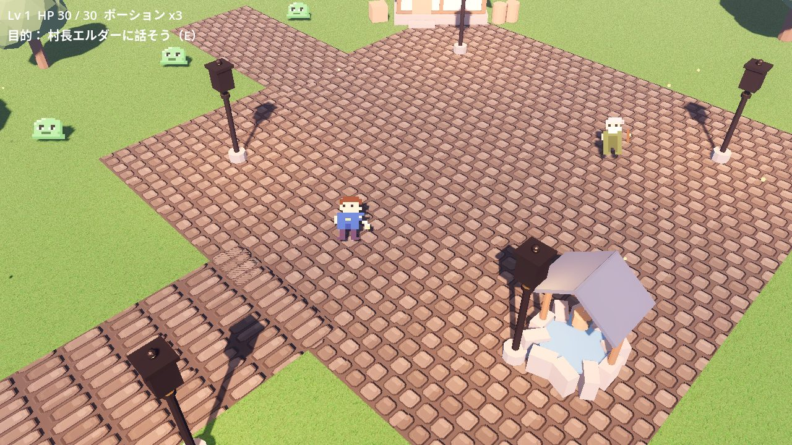
HD-2D RPG『星屑の村』村画面 ─ Museで制作（実スクショ）
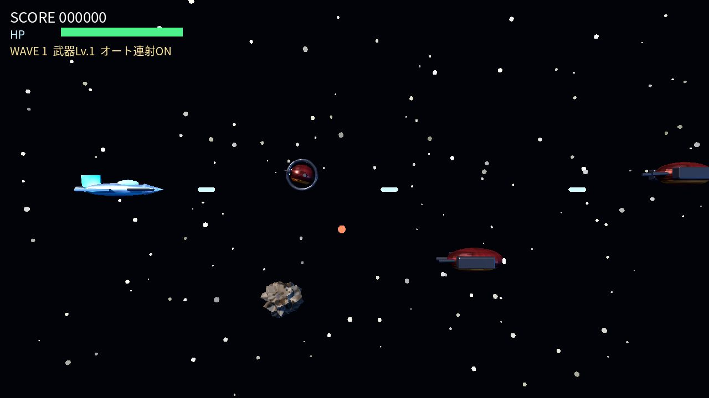
3Dシューティング『SIDE NOVA』─ 授業当日に制作（実スクショ）
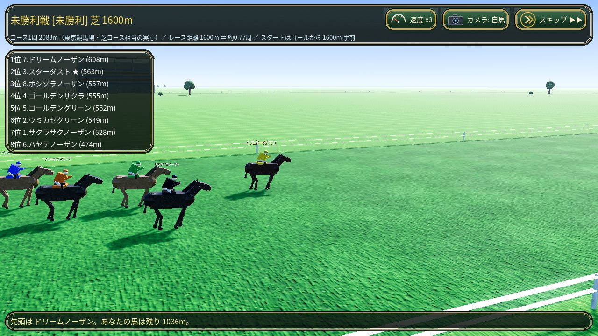
競馬ゲーム『スターホース牧場』レース ─ 実スクショ
⬇ INSTALLGodot + Blender を Muse の環境にインストールした。
🎮 OPERATE目的を渡して操作させ、モデルとゲームを作らせた。
📦 DELIVER#3dチャンネル課題（11/16）：exe＋スクショ提出が実際に集まった。
前回の学び：可能性は「賢さ」ではなく
「道具を足せるか」で決まる。今日は足し方を3種類に増やす。
▶ 03 連携マップ02今日の論点
「どのAIを使うか」ではなく、「どうつなぐか」。
1つのツールで全部やろうとすると、どこかで詰まる。絵が得意なAI、動きが得意なサービス、実装が得意なエージェント ─ 工程ごとに最適な道具を選び、成果物をバトンとして渡すのが連携設計だ。
素材企画・絵・音
生成AI
➡
変換アニメ化・形式変換
専門ツール
➡
実装ゲームに組み込む
Godot / Web
➡
検証遊んで直す
ビルド・共有
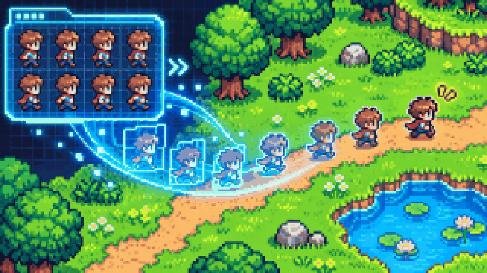
▲ 今日の演習のイメージ：スプライトシート（左）が、タイルで組んだゲーム画面（右）になる。
03連携マップ
Museの連携は、3層ある。
① インストール型環境に入れて使う
Godot / Blender / Python / ffmpeg。自分のLinuxに道具を足す。前回の型。
▶ 04 第1層
② 標準連携型つなげばすぐ使える
GitHub / Slack / Gmail / Drive / Calendar / Sheets。Museの標準機能。
▶ 05 第2層
③ ブラウザ操作型サイトを開いて使う
ChatGPT / AI Studio / Gemini / AutoSprite。今日の主役。
▶ 06 第3層
層が上がるほど「相手に合わせる」要素が増える。①は自由、②は決まった窓口、③は画面と規約に合わせる。
04第1層 ─ インストール型
インストールして使う。自由度は最大。
GodotBlenderPythonffmpegImageMagickコンパイラブラウザ
できること- モデル生成・変換（.glb /.fbx）
- 画像の切り抜き・リサイズ・形式変換
- ビルド、テスト、動画書き出しまで自動化
連携のコツ- 「どのアプリで、何を入れて、何を出すか」を発注文に書く
- 入出力のファイル形式と置き場所を決めて渡す
- 検証方法（スクショ／テスト）までセットで頼む
前回の Godot + Blender がこの層。今日の演習でも、最後のゲーム化はこの層で受ける。
05第2層 ─ 標準連携
標準連携は、つなげばすぐ使える。
| サービス | Museからできること | 制作で効く場面 |
|---|
| GitHub | リポジトリを読む／課題を実装／pushする | 現行プロジェクトへの合流、版管理 |
| Slack | チャンネルを読む／下書き・投稿（承認あり） | 課題確認、提出、連絡の整理 |
| Gmail / Calendar | メール検索・下書き、予定の確認・作成 | 締切管理、調整 |
| Drive / Sheets | 資料を読む、表に集計する、文書を作る | 仕様書・進捗表・発表資料 |
GitHub連携：AIが開発メンバーとして合流する
Google連携：Drive・Gmail・Sheetsが文脈になる
連携＝「文脈と置き場所」を渡すこと。送信・公開など外向きの操作は、必ず人の承認を挟む。
06第3層 ─ ブラウザ操作
ブラウザ操作が、Museはかなり得意。
💪 なぜ強いのか- 開く・読む・入力する・押す・上げ下げする ─ 人の操作をそのまま再現できる
- 専用連携がなくても、Web画面がある限り使える
- 複数サイトをまたぐ手順をつなげられる
⚠ 弱みと注意- ログイン・本人確認（MFA）は本人がやる。パスワードを貼らない
- 画面変更・制限・クレジット消費は相手次第。途中で止めて確認する設計に
- 課金・公開・送信の直前は必ず自分が確認
合言葉：「操作は任せる、ログインと課金と公開は自分」
07ブラウザ経由で他のAIを呼ぶ
他のAIも、「部下の部下」として使える。
ChatGPT絵と相談役
画像生成（ドット絵キャラ／背景チップ）、企画の壁打ち。画像生成まで実機検証済み（2026-11-22）。
Google AI StudioGeminiで一気に作る
長いコード生成を頼める。HTMLゲーム全文の生成・回収まで検証済み（2026-11-22）。
Gemini（Web）調べ物と下書き
要約、翻訳、アイデア出し。ブラウザで開けるAIは原則どれも使える。
なぜMuse経由にするのか？ 生成して終わりではなく、保存・変換・組み込み・検証まで自動でつなげるため。単体だと、ダウンロードと配置とリネームを全部自分でやることになる。
08今日の演習 ─ 全体フロー
素材からゲームまで、1本つなぐ。
STEP 1ChatGPT
背景チップ
➡
STEP 2ChatGPT
キャラ1体
➡
STEP 3AutoSprite
アニメ化
➡
STEP 4Muse
ゲーム化
➡
STEP 5遊んで
直す
進め方（どちらでも可）A. Muse経由：自分のAIエージェントに工程ごと発注する。
B. 手動＋Muse：生成サイトは自分で操作し、ファイルだけ渡して組み込ませる。
今日の完成条件キャラがアニメーションして動き、背景チップが敷かれ、キー操作で遊べる画面をスクショで示せること。
09STEP 1-2 ─ ChatGPTでドット絵
背景チップとキャラを描く。
🗺 背景チップ用プロンプト例16bit風ドット絵のタイルチップセットを作ってください。1タイル=32×32px相当で分割できる構図。含めるもの：草地、土、石畳、水辺の岸。色味とドットの粒度を統一し、継ぎ目が目立たないように。キャラクターや文字は入れない。
👤 キャラ用プロンプト例（重要）ドット絵のゲームキャラクターを1体、全身で描いてください。正面を向いた直立ポーズ、全身が切れずに入る。背景は単色（白）で輪郭をはっきり。色数は少なめ、シルエットは単純に。武器やマントなどの細い揺れ物は付けない。※このままAutoSpriteに渡します
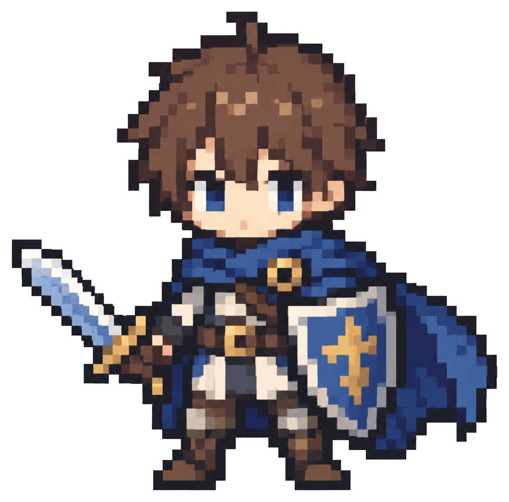
▲ 実際の検証用キャラ（ChatGPT生成 → 背景除去）verify_hero_01
剣＋盾＋マント付き = あえての「崩れやすい例」。今日はもっと単純に。
キャラの条件は「描きやすさ」ではなく「アニメ化しやすさ」で決める。
10STEP 3 ─ AutoSprite（autosprite.io）
1枚を、アニメーションにする。
手順（ゲート方式）- アップロード ─ キャラ画像を上げる（プロンプト生成は使わない）
- 基準ビュー確認 ─ 顔・配色・比率が原画と一致するか見る。崩れていたら画像を直す
- walkから生成 ─ 一番ごまかしが利かない動きで先に判定
- 書き出し ─ PNGシート＋JSONアトラス＋個別フレームを保存
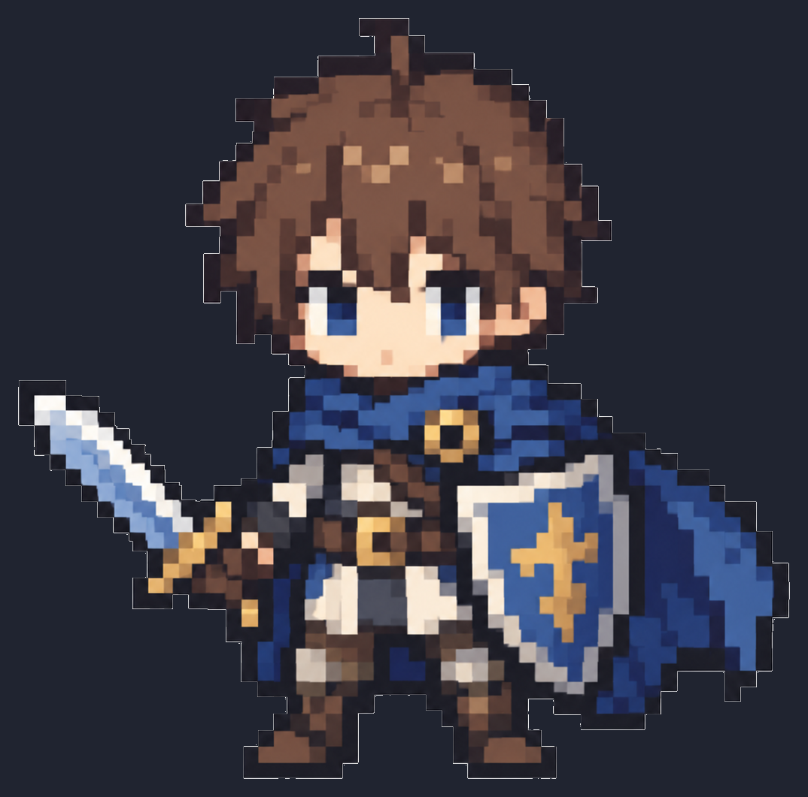
▲ 透過チェックは暗・明の両背景で（実物の検証プレビュー）
⚠ 無料枠の配分がすべて新規は15クレジット、1アニメ＝5クレジット → 3アニメまで、再生成の余裕はゼロ。推奨：walk → run → idle。8方向パック（15で全額）など高額メニューを先に押さない。※仕様は当日の画面表示を正とする。
11STEP 4-5 ─ ゲーム化して、遊んで直す
Museに渡して、ゲームにする。
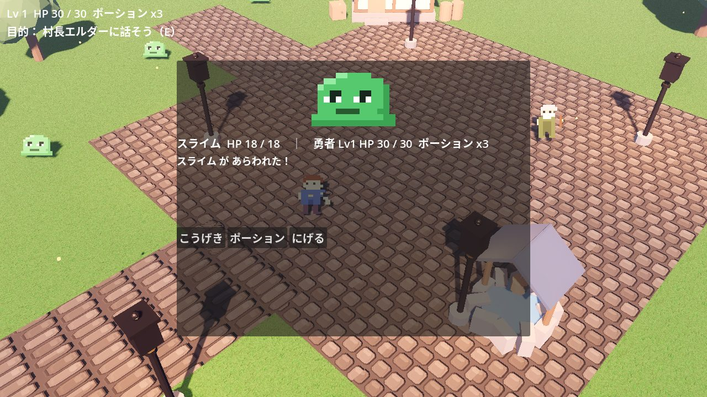
組み込み先のイメージ①：HD-2D RPG 戦闘（実スクショ）
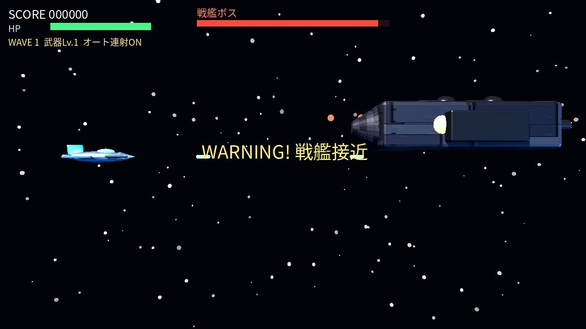
組み込み先のイメージ②：SIDE NOVA ボス戦（実スクショ）
📦 Museに渡す4点セット- 背景チップ画像
- スプライトシートPNG ＋ JSONアトラス
- ゲーム仕様（視点／操作／ゴールを1画面で）
- 完成条件（下の発注文テンプレート）
Godot要点：AnimatedSprite2D、Filter＝Nearest、Mipmaps＝Off、目安12fps、左向きは flip_h。
🔍 遊んで直す- 停止＝idle、移動＝walk、ダッシュ＝run に切り替わるか
- 足元が震えないか、左右反転で崩れないか
- 背景チップの継ぎ目が目立たないか
- おかしい所は「素材／取り込み／コード」に分けてから直させる
実証先生が先に全部回してみた ─ ChatGPT → AutoSprite
フローは、実際に回った。
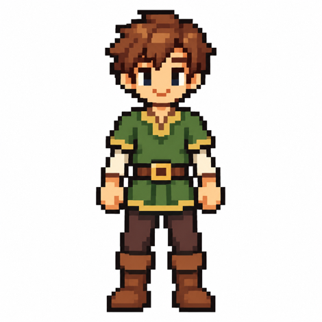
ChatGPT生成キャラ（実物）
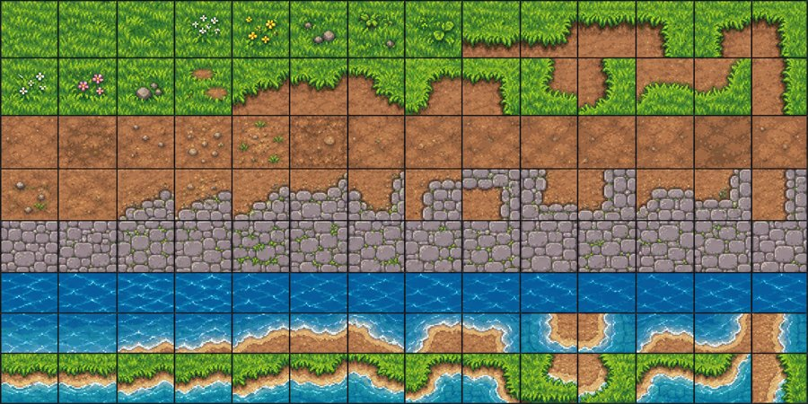
ChatGPT生成タイル（実物）
⏱ 実測（2026-11-23、授業前）- ChatGPT：2点の生成＋ダウンロードまで 約3分。制限表示なし
- キャラは「白背景・武器なし」の指示どおり → 背景除去も縁の白だけ抜けば済んだ
- AutoSprite：walk生成 約2分、消費は表示どおり 5クレジット（残高13→8で確認）
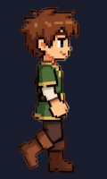
▲ 生成されたwalk（実物・25フレーム）
📏 数値でも判定したフレーム間の高さのばらつき 3.2%、足元位置のブレ 0.46px。目視だけでなく測れる。
⚠ 新発見：シートの無料ダウンロードは月2回まで。生成（クレジット）とダウンロード（月2回）は別枠。
実証ゲーム化 ─ ハマりどころと直し方
歩かせたら、潰れた。測って直した。
▲ 検証ゲーム（実物）。遊べる版：chinomasato.github.io/muse-pages-test/flow-test-20261123/
🎯 教訓シートの1フレームは256×256、でもキャラ本体は 110×192 だけ。余白ごと縮めると潰れる。「写っている範囲」に合わせて切り出すのが正解（Godotなら AtlasTexture の Region）。
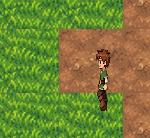
✕ 潰れた（実際の画面）
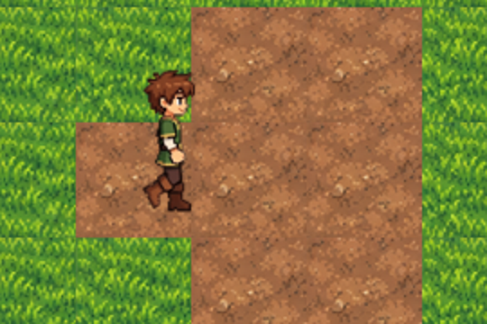
○ 切り出し修正後
もう1つの実測ChatGPTのタイルは見た目きれいなグリッドでも、間隔が完全には均一でない。等分で切り出すとずれる ─ 境界を見て切り出すこと。
実証最終工程 ─ Godotでexe化
フローの終点は、Windowsのexe。
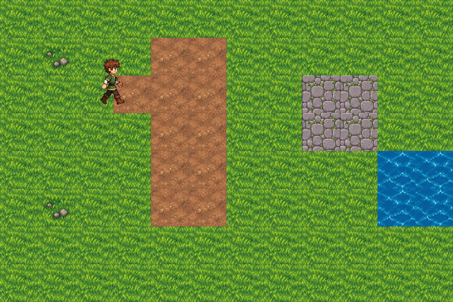
Godot版：歩行中（実キャプチャ）
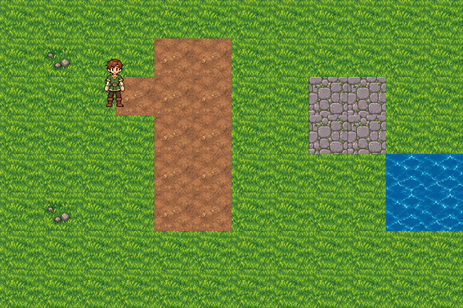
Godot版：停止＝正面の待機絵に切替
🛠 Godot側の実装ポイント- AnimatedSprite2D ＋ AtlasTextureで25フレームを登録、12fps・ループ
- Regionはキャラ本体の範囲（70,28／120×200）─ Web版の「潰れ」と同じ教訓がここでも効く
- Filter＝Nearest、停止中は正面絵の別スプライトに切替、左向きは flip_h
📦 書き出し結果（実測）- Windows向けリリース書き出し成功：単体exe・約82MB（素材同梱）
- プロジェクト一式を渡せば、同じ手順で自分のゲームもexe化できる
- 提出は前回どおり「exe＋スクショ」を #3d チャンネルのスレッドへ
12発注文テンプレート
そのまま使える発注文。
自分のAIエージェントに貼る。視点とゴールは自分のゲームに書き換えること。要約せず、全文のまま渡す（条件が抜けるのを防ぐ）。
工程をつないで進め、各工程の成果物をファイルで残してください。
1. ブラウザでChatGPTを開き、ドット絵の背景チップと、全身・単色背景のドット絵キャラクター1体を生成して保存する。キャラはアニメ化しやすい単純なシルエットにすること。
2. ブラウザでAutoSprite（autosprite.io）を開き、キャラをアップロードして walk → run → idle の順に生成する。無料枠は15クレジットしかないので、walkのプレビューで顔や脚が崩れていたら、残りを消費せず止めて報告すること。
3. スプライトシートPNGとJSON、背景チップを使って、Godotでキー操作で動ける小さなゲームを作る。停止=idle、移動=walk、ダッシュ=run を切り替えること。スプライトはシートの余白ごと縮めると潰れるので、キャラが写っている範囲（Region）で切り出すこと。
4. 最後にGodotのWindows向け書き出しで単体exeにする。
5. 完成条件：exeと、キャラがアニメして動く画面のスクリーンショットを撮り、使った素材ファイルの一覧と一緒に報告すること。
ログインや課金が必要な画面で止まったら、自分で判断せず私に回してください。
ポイントは4つ：工程・順序・止める条件・完成条件。細部はAIエージェントに任せてよい。
13つまずき対処
つまずいたら、まず切り分ける。
| 症状 | よくある原因 | 対処 |
|---|
| ログインで止まる | MFA・本人確認は本人しかできない | その画面だけ自分で操作して引き継ぐ |
| キャラが別人になる | 入力画像が複雑／揺れ物が多い | クレジットを消費せず止める。画像を単純化して作り直す |
| クレジット不足 | 高額メニューや再生成の連打 | walk 1本で判定する配分に戻す |
| 絵がぼやける | ドット絵のフィルタ設定 | Filter＝Nearest、Mipmaps＝Off で再インポート |
| アニメが震える | 基準線・サイズの不一致 | JSONの columns / frameCount でグリッドを合わせ直す |
「全部AIのせい」にしない。素材・変換・取り込み・コードのどこで壊れたかを言えることが、次世代の制作スキルの本体。
14提出と今日のゴール
提出物（#3dチャンネルへ）
📮 提出するもの- ゲーム画面のスクショ（アニメ中の1枚でよい）
- 使った素材：背景チップ／キャラ原画／スプライトシート
- 一言レポート：どの層の連携をどこで使ったか。止まった所と切り分け
- 可能なら：動くゲーム本体（exe または URL）
🏁 今日のゴール- 連携の3層を自分の言葉で説明できる
- ChatGPT → AutoSprite → ゲーム化を1回通した
- クレジット配分と「止める判断」を含めて工程を設計できる
道具は、つないで初めて力になる。
あなたの仕事は、工程を設計し、道具を選び、つなぎ目を検証すること。
次回：今日の素材フローを、自分の開発中タイトルに移植する。／ 参考：AutoSprite公式 autosprite.io、検証手順「AutoSprite無料枠・1キャラ検証手順」（2026-11-20）、前回資料「Museの使い方と特徴」（2026-11-19）
▶ 08 演習フロー ▶ 12 発注文